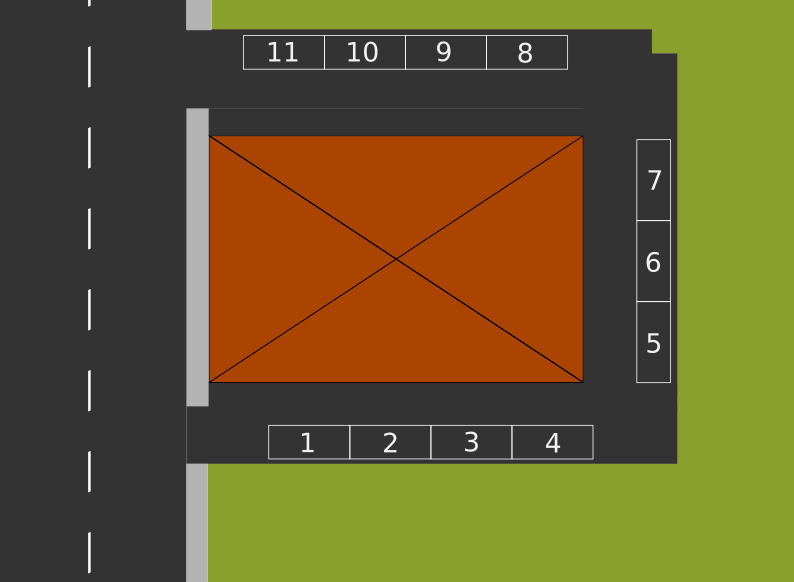

Lists 2 - operators#
Download exercises zip#
There are several operators to manipulate lists. The following ones behave like the ones we’ve seen in strings:
Operator |
Syntax |
Result |
Meaning |
|---|---|---|---|
|
|
Return the list length |
|
list |
obj |
Reads/writes an element at the specified index |
|
list |
|
Extracts a sublist - return a NEW list |
|
obj |
|
Cheks if an object is contained in the list |
|
list |
|
Concatenates two lists - return a NEW list |
|
|
|
Given a list of numbers, return the greatest one |
|
|
|
Given a list of numbers, returns the smallest one |
|
|
|
Given a list of numbers, sums all of them |
|
list |
|
Replicates the list - return a NEW list |
|
|
|
Cheks whether lists are equal of different |
What to do#
Unzip exercises zip in a folder, you should obtain something like this:
lists
lists1.ipynb
lists1-sol.ipynb
lists2.ipynb
lists2-sol.ipynb
lists3.ipynb
lists3-sol.ipynb
lists4.ipynb
lists4-sol.ipynb
lists5-chal.ipynb
jupman.py
WARNING: to correctly visualize the notebook, it MUST be in an unzipped folder !
open Jupyter Notebook from that folder. Two things should open, first a console and then a browser. The browser should show a file list: navigate the list and open the notebook
lists2.ipynbGo on reading the exercises file, sometimes you will find paragraphs marked Exercises which will ask to write Python commands in the following cells.
Shortcut keys:
to execute Python code inside a Jupyter cell, press
Control + Enterto execute Python code inside a Jupyter cell AND select next cell, press
Shift + Enterto execute Python code inside a Jupyter cell AND a create a new cell aftwerwards, press
Alt + EnterIf the notebooks look stuck, try to select
Kernel -> Restart
Length of a list#
A list is a sequence, and like any sequence you can use the function len to obtain the length:
[1]:
a = [7,5,8]
[2]:
len(a)
[2]:
3
[3]:
b = [8,3,6,4,7]
[4]:
len(b)
[4]:
5
If a list contains other lists, they count as single elements:
[5]:
mixed = [
[4,5,1],
[8,6],
[7,6,0,8],
]
[6]:
len(mixed)
[6]:
3
WARNING: YOU CAN’T use len as a method
[3,4,2].len() # WRONG
EXERCISE: Try writing [3,4,2].len() here, which error appears?
[7]:
# write here
#[3,4,2].len()
EXERCISE: Try writing [3,4,2].len WITHOUT the round parenthesis at the end, which error appears?
[144]:
# write here
#[3,4,2].len
---------------------------------------------------------------------------
AttributeError Traceback (most recent call last)
Cell In[144], line 3
1 # write here
2
----> 3 [3,4,2].len
AttributeError: 'list' object has no attribute 'len'
QUESTION: If x is some list, by writing:
len(len(x))
what do we get?
the length of the list
an error
something else
ANSWER: 2: len wants a sequence as argument and gives back a number, so the internal call to len(x) produces a number which is given to the external len and at that point Python will complain it received a number instead of a sequence. Verify which error appears by writing len(len(x)) down here.
[9]:
# write code here
QUESTION: Look at this expression, without executing it. What does it produce?
[len([]), len([len(['a','b'])])]
an error (which one?)
a number (which one?)
a list (which one?)
Try writing the result by hand, and then compare it with the one obtained by executing the code in a cell.
ANSWER: 3: the list [0, 1]
QUESTION: Look at this expression, without executing it. What does it produce?
len([[[],[]],[],[[[]]],[[],[]]])
an error (which one?)
a number (which one?)
a list (which one?)
ANSWER: 2. produces the number 4
QUESTION: What does the following expression produce?
[[((len('ababb')))],len(["argg",('b'),("c")]), len([len("bc")])]
ANSWER: [[5], 3, 1]
Reading an element#
Like for strings, we can access an element a list element by putting the index of the position we want to access among square brackets:
[10]:
# 0 1 2 3
la = [70, 60, 90, 50]
As for any sequence, the positions start from 0:
[11]:
la[0]
[11]:
70
[12]:
la[1]
[12]:
60
[13]:
la[2]
[13]:
90
[14]:
la[3]
[14]:
50
Like for any string, if we exaggerate with the index we get an error:
la[4]
---------------------------------------------------------------------------
IndexError Traceback (most recent call last)
<ipython-input-134-09bfed834fa2> in <module>
----> 1 la[4]
IndexError: list index out of range
As in strings, we can obtain last element by using a negative index:
[15]:
# 0 1 2 3
la = [70, 60, 90, 50]
[16]:
la[-1]
[16]:
50
[17]:
la[-2]
[17]:
90
[18]:
la[-3]
[18]:
60
[19]:
la[-4]
[19]:
70
If we go beyond the list length, we get an error:
la[-5]
---------------------------------------------------------------------------
IndexError Traceback (most recent call last)
<ipython-input-169-f77280923dce> in <module>
----> 1 la[-5]
IndexError: list index out of range
QUESTION: if x is some list, by writing:
x[0]
what do we get?
the first element of the list
always an error
sometimes an element, sometimes an error according to the list
ANSWER: 3: if the list is empty Python will not find the element and will give us an error. Which one? Try writing in the cell down here [][0] and see what happens.
[20]:
# write code here
QUESTION: if x is some list, by writing:
x[len(x)]
what do we get?
an element of the list
always an error
sometimes an element, sometimes an error according to the list
ANSWER: 2. always an error: len(x) will always be a number equal to the last available index + 1
Exercise - Gutenberg apprentice#
Such honor! So young and you have been hired as master Gutenberg apprentice! Your job is to compose the pages with the characters made with iron blocks, so your collaborators can then send everything to the printing press.
You have a chars list in which the original blocks are saved. Can you print the writing Gutenberg?
DO NOT write characters nor additional strings (so no
'g'nor'G'!)every character MAY be reused more than once
[ ]:
chars = ['b', 'e', 'g', 'n', 'r', 't', 'u'] # Gutenberg
#chars = ['a', 'm', 's', 'p', 'o', 'a', 't'] # Stampamos
l = chars # Let's create a new handy variable
# write here
Show solution
[ ]:
chars = ['b', 'e', 'g', 'n', 'r', 't', 'u'] # Gutenberg
#chars = ['a', 'm', 's', 'p', 'o', 'a', 't'] # Stampamos
l = chars # Let's create a new handy variable
# first solution: not optimal
print(l[2].upper(), l[6], l[5], l[1], l[3], l[0], l[1], l[4], l[2])
# second solution:
print(f"{l[2].upper()}{l[6]}{l[5]}{l[1]}{l[3]}{l[0]}{l[1]}{l[4]}{l[2]}")
# third solution:
print("%s%s%s%s%s%s%s%s%s" % (l[2].upper(), l[6], l[5], l[1], l[3], l[0], l[1], l[4], l[2]))
Writing an element#
Since all the lists are MUTABLE, given a list object we can change the content of any cell inside.
For example, suppose you want to change the cell at index 2 of the list la, from 6 to 5:
[22]:
#0 1 2 3
la = [7, 9, 6, 8]
We might write like this:
[23]:
la[2] = 5
[24]:
la
[24]:
[7, 9, 5, 8]
Let’s see what’s happening with Python Tutor:
[25]:
# WARNING: FOR PYTHON TUTOR TO WORK, REMEMBER TO EXECUTE THIS CELL with Shift+Enter
# (it's sufficient to execute it only once)
import sys
sys.path.append('../')
import jupman
[26]:
# 0 1 2 3
la = [7, 9, 6, 8]
la[2] = 5
jupman.pytut()
[26]:
As you see, no new memory regions are created, it just overwrites an existing cell.
Exercise - a jammed parking lot#
You are the administrator of the condominum “The Pythonic Joy”. Every apartment has one or two parking spaces assigned, and each one is numbered from 1 to 11.
What follows is the current parking lot, and as you can see there are three spaces not assigned, because the flats 3, 4 and 7 have no tenants anymore:
[27]:
parking_lot = ["Carlo", "Apt.3", "Ernesto", "Apt.4", "Apt.7", "Pam", "Giovanna", "Camilla", "Giorgia", "Jessica", "Jim"]
To keep the order you decide to compact the assignments and leave the empty spaces at the far end (could be handy for parking the movers!)
Write some code to MODIFY parking_lot so to have:
>>> print(parking_lot)
['Carlo', 'Jessica', 'Ernesto', 'Jim', 'Giorgia', 'Pam', 'Giovanna', 'Camilla', 'App.7', 'App.3', 'App.4']
DO NOT create new lists (no
[a,b, ...]norlist(a,b,...))DO NOT write tenants nor apartment names (so no
'Jessica'nor'Apt.3')parking_lotmay have variable lengthassume the unassigned places are always 3 and in fixed position

[ ]:
parking_lot = ["Carlo", "Apt.3", "Ernesto", "Apt.4", "Apt.7", "Pam", "Giovanna", "Camilla", "Giorgia", "Jessica", "Jim"]
#result: ['Carlo', 'Jessica', 'Ernesto', 'Jim', 'Giorgia', 'Pam', 'Giovanna', 'Camilla', 'Apt.7', 'Apt.3', 'Apt.4']
#parking_lot = ["Cristian", "Apt.3", "Edgar", "Apt.4", "Apt.7", "Pamela", "Giusy", "Cristina", "John"]
#result: ['Cristian', 'Cristina', 'Edgar', 'John', 'Giusy', 'Pamela', 'Apt.7', 'Apt.3', 'Apt.4']
# write here
print(parking_lot)
Show solution
[ ]:
parking_lot = ["Carlo", "Apt.3", "Ernesto", "Apt.4", "Apt.7", "Pam", "Giovanna", "Camilla", "Giorgia", "Jessica", "Jim"]
#result: ['Carlo', 'Jessica', 'Ernesto', 'Jim', 'Giorgia', 'Pam', 'Giovanna', 'Camilla', 'Apt.7', 'Apt.3', 'Apt.4']
#parking_lot = ["Cristian", "Apt.3", "Edgar", "Apt.4", "Apt.7", "Pamela", "Giusy", "Cristina", "John"]
#result: ['Cristian', 'Cristina', 'Edgar', 'John', 'Giusy', 'Pamela', 'Apt.7', 'Apt.3', 'Apt.4']
parking_lot[1],parking_lot[-2] = parking_lot[-2],parking_lot[1]
parking_lot[3],parking_lot[-1] = parking_lot[-1],parking_lot[3]
parking_lot[4],parking_lot[-3] = parking_lot[-3],parking_lot[4]
print(parking_lot)
List of strings#
We said we can put any object into a list, for example some strings:
[40]:
vegetables = ['tomatoes', 'onions', 'carrots', 'cabbage']
Let’s try extracting a vegetable by writing this expression:
[41]:
vegetables[2]
[41]:
'carrots'
Now, the preceding expression produces the result 'carrots', which we know is a string. This suggests we can use the expression exactly like if it were a string.
Suppose we want to obtain the first character of the string 'carrots', if we directly have the string we can write like this:
[42]:
'carrots'[0]
[42]:
'c'
But if the string is inside the previous list, we could directly do like this:
[43]:
vegetables[2][0]
[43]:
'c'
Exercise - province codes#
Given a list with exactly 4 province codes in lowercase, write some code which creates a NEW list containing the same codes in uppercase characters.
your code must work with any list of 4 provinces
hint: if you don’t remember the right method, have a look here
Example 1 - given:
provinces = ['tn','mi','to','ro']
your code must print:
['TN', 'MI', 'TO', 'RO']
Example 2 - given:
provinces = ['pa','ge','ve', 'aq']
Your code must print:
['PA', 'GE', 'VE', 'AQ']
[ ]:
provinces = ['tn','mi','to','ro']
#provinces = ['pa','ge','ve', 'aq']
# write here
Show solution
[ ]:
provinces = ['tn','mi','to','ro']
#provinces = ['pa','ge','ve', 'aq']
print([provinces[0].upper(), provinces[1].upper(), provinces[2].upper(), provinces[3].upper()])
Exercise - games#
Given a list games of exactly 3 strings, write some code which MODIFIES the list so it contains only the first characters of each string.
Your code must work with any list of exactly 3 strings
Example - given:
games = ["Monopoly","RISK","Bingo"]
After executing the code, it must result:
>>> print(games)
["M","R","B"]
[ ]:
games = ["Monopoly", "RISK", "Bingo"] # ['M','R','T']
#games = ["Frustration", "Game of the Goose", "Scrabble"] # ['F','G','S']
# write here
print(games)
Show solution
[ ]:
games = ["Monopoly", "RISK", "Bingo"] # ['M','R','T']
#games = ["Frustration", "Game of the Goose", "Scrabble"] # ['F','G','S']
games = [ games[0][0], games[1][0], games[2][0] ]
print(games)
Slices#
We can extract sequences from lists by using slices. A slice is produced by placing square brackets after the list with inside the starting index (INCLUDED), followed by a colon :, followed by the end index (EXCLUDED). It works exactly as with strings: in that case the slice produces a new string, in this case it produces a NEW list. Let’s see an example:
[46]:
#0 1 2 3 4 5 6 7 8 9
la = [40,30,90,80,60,10,40,20,50,60]
[47]:
la[3:7]
[47]:
[80, 60, 10, 40]
We extracted a NEW list [80, 60, 10, 40] from the list la starting from index 3 INCLUDED until index 7 EXCLUDED. We can see the original list is preserved:
[48]:
la
[48]:
[40, 30, 90, 80, 60, 10, 40, 20, 50, 60]
Let’s verify what happens with Python Tutor, by assigning the new list to a variable lb:
[49]:
# 0 1 2 3 4 5 6 7 8 9
la = [40,30,90,80,60,10,40,20,50,60]
lb = la[3:7]
jupman.pytut()
[49]:
You will notice a NEW memory region, associated to variable lb.
Slice - limits#
When we operate with slices we must be careful about indeces limits. Let’s see how they behave:
[50]:
#0 1 2 3 4
[50,90,70,80,60][0:3] # from index 0 *included* to 3 *excluded*
[50]:
[50, 90, 70]
[51]:
#0 1 2 3 4
[50,90,70,80,60][0:4] # from index 0 *included* a 4 *excluded*
[51]:
[50, 90, 70, 80]
[52]:
#0 1 2 3 4
[50,90,70,80,60][0:5] # from index 0 *included* to 5 *excluded*
[52]:
[50, 90, 70, 80, 60]
[53]:
#0 1 2 3 4
[50,90,70,80,60][0:6] # if we go beyond the list length Python does not complain
[53]:
[50, 90, 70, 80, 60]
[54]:
#0 1 2 3 4
[50,90,70,80,60][8:12] # Python doesn't complain even if we start from non-existing indeces
[54]:
[]
QUESTION: This expression:
[][3:8]
produces a result (which one?)
produces an error (which one?)
ANSWER: given an empty list, we are trying yo create a sublist which goes from index 3 INCLUDED to index 8 EXCLUDED. As we’ve seen before, if we start after the limit and also if we go beyond the limit Python does not complain, and when elements are not found we are simply served with an empty list.
QUESTION: if x is some list (may also empty), what does this expression do? Can it give an error? Does it return something useful?
x[0:len(x)]
ANSWER: Always return a NEW copy of the entire list, because it starts from index 0 INCLUDED and ends at index len(x) EXCLUDED.
It also works with the empty list, because [][0:len([])] is equivalent to [][0:0] that is sublist from 0 included to 0 excluded, so we are not taking any character and are not going beyod list limits. In fact, as we’ve seen before, even if we went beyond Python wouldn’t complain.
Exercise - The ‘treccia mochena’#
As you well know, a wonderful pastry is made in the Mocheni valley in Trentino: the famous ‘treccia mochena’.
At a quick glance, it may look like a braid loaf, between 30 and 60 cm long with inside a mix of ingredients along a marvellous and secret cream.
With your friends Camilla and Giorgio, you bought a treccia divided in a certain number of portions stuffed with walnuts, bluberries and red currants.
treccia = ['w', 'w', 'w', 'w', 'w', 'b', 'b', 'b', 'b', 'b', 'b', 'c', 'c', 'c', 'c']
walnuts,bluberries,currants = 5,6,4
You like the bluberries, Giorgio likes walnuts and Camilla the red currants.
Write some code to place into variables mine, giorgio and camilla some lists obtained from treccia, and PRINT the result:
Mine: ['b', 'b', 'b', 'b', 'b', 'b']
Giorgio: ['w', 'w', 'w', 'w', 'w']
Camilla: ['c', 'c', 'c', 'c']
suppose
trecciahas always only 3 ingredientsDO NOT write constant numbers (except
0)
[ ]:
# Walnuts Bluberries Currants
walnuts,bluberries,currants,treccia = 5,6,4,['w', 'w', 'w', 'w', 'w', 'b', 'b', 'b', 'b', 'b', 'b', 'c', 'c', 'c', 'c']
#walnuts,bluberries,currants,treccia = 2,4,3,['W', 'W', 'B', 'B', 'B', 'B', 'C', 'C', 'C']
# write here
Show solution
[ ]:
# Walnuts Bluberries Currants
walnuts,bluberries,currants,treccia = 5,6,4,['w', 'w', 'w', 'w', 'w', 'b', 'b', 'b', 'b', 'b', 'b', 'c', 'c', 'c', 'c']
#walnuts,bluberries,currants,treccia = 2,4,3,['W', 'W', 'B', 'B', 'B', 'B', 'C', 'C', 'C']
mine = treccia[walnuts : walnuts+bluberries]
giorgio = treccia[0 : walnuts]
camilla = treccia[walnuts+bluberries : walnuts+bluberries+currants]
print(" Mine: %s \nGiorgio: %s \nCamilla: %s" % (mine, giorgio, camilla))
Slices - omitting limits#
If we will, it’s possible to omit start index, in which case Python will suppose it’s 0:
[56]:
#0 1 2 3 4 5 6 7 8 9
[90,60,80,70,60,90,60,50,70][:3]
[56]:
[90, 60, 80]
It’s also possible to omit the end index, in this case Python will extract elements until the list end:
[57]:
#0 1 2 3 4 5 6 7 8 9
[90,60,80,70,60,90,60,50,70][3:]
[57]:
[70, 60, 90, 60, 50, 70]
By omitting both indexes we obtain the full list:
[58]:
#0 1 2 3 4 5 6 7 8 9
[90,60,80,70,60,90,60,50,70][:]
[58]:
[90, 60, 80, 70, 60, 90, 60, 50, 70]
QUESTION: What is this code going to print? Will la get modified or not?
la = [7,8,9]
lb = la[:]
lb[0] = 6
print('la =',la)
print('lb =',lb)
ANSWER: lb = la[:] creates a NEW list containing all the elements which are in la. When we write lb[0] = 6 we are only modifying the memory region associated to lb. If you observe it in Python Tutor, you will see that la and lb are pointing to different memory regions:
[59]:
la = [7,8,9]
lb = la[:]
lb[0] = 6
#print('la =',la)
#print('lb =',lb)
jupman.pytut()
[59]:
QUESTION: For each of the following expressions, try guessing which value it produces, or if it gives an error.
python [9,7,8,6][1:1]python [9,7,8,6][1:2]python [9,7,8,6][2:3][0]python [][]python [][:]python [3][:]python [:][]
Exercise - An out of tune guitar#
In the attic you found an old guitar which was around when you were a child. Now that you have a degree in Sound Engineering you try playing it while a sensor measures the notes it produces.
The sensor is a microphone, and each one tenth of second it records the main note it detected.
You discover this phenomena: when played, some guitar strings have an oscillating behaviour, but then they synthonize on a precise note until the end:
'D', 'A', 'F', 'E', 'B', 'G', 'B', 'F', 'F', 'F', 'F', 'F', 'F', 'F', '...'
Other strings do the opposite:
'C', 'C', 'C', 'C', 'C', 'D', 'G', 'F', 'B', 'B', 'C', 'B', '...'
A list cutoffs records for each string the instants in which the weird behaviour starts or ends. The instants are represented as a sequence of beats '*', for example the first string starts an anomalous behaviour after 5 beats: '*****', while the seconds ends the anomalous behaviour after 7 beats: '*******'
Write some code to cut the sensor output and obtain only the sequences of continuous and correct notes. In the end, it should PRINT:
['C', 'C', 'C', 'C', 'C']
['F', 'F', 'F', 'F', 'F', 'F', 'F', '...']
['D', 'D', 'D', 'D', 'D', 'D', '...']
['G', 'G', 'G', 'G']
DO NOT write constant numbers of instants in the code, instead, use the variable
cutoffs
[ ]:
cutoffs = ['*****',
'*******',
'***',
'****',]
string1 = ['C', 'C', 'C', 'C', 'C', 'D', 'G', 'F', 'B', 'B', 'C', 'B', '...']
string2 = ['D', 'A', 'F', 'E', 'B', 'G', 'B', 'F', 'F', 'F', 'F', 'F', 'F', 'F', '...']
string3 = ['B', 'E', 'G', 'D', 'D', 'D', 'D', 'D', 'D', '...']
string4 = ['G', 'G', 'G', 'G', 'D', 'D', 'A', 'A', 'B', 'F', 'B', '...']
# write here
Show solution
[ ]:
cutoffs = ['*****',
'*******',
'***',
'****',]
string1 = ['C', 'C', 'C', 'C', 'C', 'D', 'G', 'F', 'B', 'B', 'C', 'B', '...']
string2 = ['D', 'A', 'F', 'E', 'B', 'G', 'B', 'F', 'F', 'F', 'F', 'F', 'F', 'F', '...']
string3 = ['B', 'E', 'G', 'D', 'D', 'D', 'D', 'D', 'D', '...']
string4 = ['G', 'G', 'G', 'G', 'D', 'D', 'A', 'A', 'B', 'F', 'B', '...']
string1_clean = string1[:len(cutoffs[0])]
string2_clean = string2[len(cutoffs[1]):]
string3_clean = string3[len(cutoffs[2]):]
string4_clean = string4[:len(cutoffs[3])]
print(string1_clean)
print(string2_clean)
print(string3_clean)
print(string4_clean)
Slices - negative limits#
It’s also possible to set inverse and negative limits, although it’s not always intuitive:
[61]:
#0 1 2 3 4 5 6
[70,40,10,50,60,10,90][3:0] # from index 3 to positive indexes <= 3 produces nothing
[61]:
[]
[62]:
#0 1 2 3 4 5 6
[70,40,10,50,60,10,90][3:1] # from index 3 to positive indexes <= 3 produces nothing
[62]:
[]
[63]:
#0 1 2 3 4 5 6
[70,40,10,50,60,10,90][3:2] # from index 3 to positive indexes <= 3 produces nothing
[63]:
[]
[64]:
#0 1 2 3 4 5 6
[70,40,10,50,60,10,90][3:3] # from index 3 to positive indexes <= 3 produces nothing
[64]:
[]
Let’s see what happens with negative indexes:
[65]:
# 0 1 2 3 4 5 6
#-7 -6 -5 -4 -3 -2 -1
[70,40,10,50,60,10,90][3:-1]
[65]:
[50, 60, 10]
[66]:
# 0 1 2 3 4 5 6
#-7 -6 -5 -4 -3 -2 -1
[70,40,10,50,60,10,90][3:-2]
[66]:
[50, 60]
[67]:
# 0 1 2 3 4 5 6
#-7 -6 -5 -4 -3 -2 -1
[70,40,10,50,60,10,90][3:-3]
[67]:
[50]
[68]:
# 0 1 2 3 4 5 6
#-7 -6 -5 -4 -3 -2 -1
[70,40,10,50,60,10,90][3:-4]
[68]:
[]
[69]:
# 0 1 2 3 4 5 6
#-7 -6 -5 -4 -3 -2 -1
[70,40,10,50,60,10,90][3:-5]
[69]:
[]
It’s also possible to start from a negative index and arrive to a positive one. As long as the first index marks a position which precedes the second index, something gets returned:
[70]:
# 0 1 2 3 4 5 6
#-7 -6 -5 -4 -3 -2 -1
[70,40,10,50,60,10,90][-7:3]
[70]:
[70, 40, 10]
[71]:
# 0 1 2 3 4 5 6
#-7 -6 -5 -4 -3 -2 -1
[70,40,10,50,60,10,90][-6:3]
[71]:
[40, 10]
[72]:
# 0 1 2 3 4 5 6
#-7 -6 -5 -4 -3 -2 -1
[70,40,10,50,60,10,90][-5:3]
[72]:
[10]
[73]:
# 0 1 2 3 4 5 6
#-7 -6 -5 -4 -3 -2 -1
[70,40,10,50,60,10,90][-4:3]
[73]:
[]
[74]:
# 0 1 2 3 4 5 6
#-7 -6 -5 -4 -3 -2 -1
[70,40,10,50,60,10,90][-3:3]
[74]:
[]
[75]:
# 0 1 2 3 4 5 6
#-7 -6 -5 -4 -3 -2 -1
[70,40,10,50,60,10,90][-2:3]
[75]:
[]
QUESTION: For each of the following expressions, try guessing which value is produced, or if it gives an error
[9,7,8,6][0:-2]
[0:-2][9,7,8,6]
[5,7,9][1:-1]
[][-13:-17]
[9,7,8,6][-4:-1]
[9,7,8,6][-5:-1]
[9,7,8,6,10,32][-3:1]
[9,7,8,6,10,32][-3:5]
Exercise - The NonsenShop#
To keep your expenses under control you want to write a software which tracks everything you buy, and reduce pointless expenses.
You just need to take a picture of the receit with the smartphone, and an OCR (Optical Character Recognition) module will automatically read the text.
all receits have the same schema: shop name, date, “Bought items”, 1 row per item, total, thanks.
assume all the receits are always ordered by price
Write some code to create a NEW list with only the items rows, for example:
['Green varnish for salad 1,12€',
'Anti-wind lead confetti 4,99€',
'Comb for pythons 12,00€',
'Cigarette lighter for diving 23,00€',
'Transparent home shoes 35,56€']
Print the most expensive item like this:
Most expensive item was: Transparent home shoes
cost: 35,56€
[ ]:
receit = ["NonsenShop",
"July 21, 2021 14:54",
"Items:",
"Green varnish for salad 1,12€",
"Anti-wind lead confetti 4,99€",
"Comb for pythons 12,00€",
"Cigarette lighter for diving 23,00€",
"Transparent home shoes 35,56€",
"Total 56,66€",
"Thanks for buying our nonsense!"]
#receit = ["Eleganz",
# "January 3 2020 12:53",
# "Items:",
# "Wedge heels with acquarium and fishes 342,00€",
# "'Elvis' suit 20.000,00€",
# "Total 20.000,342€",
# "And now unleash the party animal in you!"]
# write here
Show solution
[ ]:
receit = ["NonsenShop",
"July 21, 2021 14:54",
"Items:",
"Green varnish for salad 1,12€",
"Anti-wind lead confetti 4,99€",
"Comb for pythons 12,00€",
"Cigarette lighter for diving 23,00€",
"Transparent home shoes 35,56€",
"Total 56,66€",
"Thanks for buying our nonsense!"]
#receit = ["Eleganz",
# "January 3 2020 12:53",
# "Items:",
# "Wedge heels with acquarium and fishes 342,00€",
# "'Elvis' suit 20.000,00€",
# "Total 20.000,342€",
# "And now unleash the party animal in you!"]
items = receit[3:-2]
last = receit[-3]
from pprint import pprint
pprint(items)
print()
print("Most expensive item was:", last[:-10])
print(" cost:", last[-10:].lstrip())
Slice - step#
It’s also possible to specify a third parameter called ‘step’ to tell Python how many cells to skip at each read. For example, here we start from index 3 and arrive to index 9 excluded, skipping by 2:
[77]:
# 0 1 2 3 4 5 6 7 8 9
[ 0,10,20,30,40,50,60,70,80,90][3:9:2]
[77]:
[30, 50, 70]
All the sequence, skipping by 3:
[78]:
# 0 1 2 3 4 5 6 7 8 9
[ 0,10,20,30,40,50,60,70,80,90][0:10:3]
[78]:
[0, 30, 60, 90]
We can also omit the limits to obtain the equivalent expression:
[79]:
# 0 1 2 3 4 5 6 7 8 9
[ 0,10,20,30,40,50,60,70,80,90][::3]
[79]:
[0, 30, 60, 90]
Slices - modifying#
Suppose we have the list
[80]:
#0 1 2 3 4 5 6 7
la = [30,40,80,10,70,60,40,20]
and we want to change la cells from index 3 INCLUDED to index 6 EXCLUDED in such a way they contain the numbers taken from list [91,92,93]. We can do it with this special notation which allows us to write a slice to the left of operator =:
[81]:
la[3:6] = [91,92,93]
[82]:
la
[82]:
[30, 40, 80, 91, 92, 93, 40, 20]
In this slightly more complex example we verify in Python Tutor that the original memory region gets actually modifyied:
[83]:
# 0 1 2 3 4 5 6 7
la = [30,40,80,10,70,60,40,20]
lb = la
lb[3:6] = [91,92,93]
jupman.pytut()
[83]:
QUESTION: Look at the following code - what does it produce?
la = [9,6,5,8,2]
la[1:4] = [4,7,0]
print(la)
modify
la(how?)an error (which one?)
ANSWER: 1 - MODIFIES la like this:
# 0 1 2 3 4
[ 9, 4, 7, 0, 2]
so from index 1 INCLUDED to index 4 EXCLUDED
QUESTION: Look at the following code. What does it produce?
la = [7,6,8,4,2,4,2,3,1]
i = 3
lb = la[0:i]
la[i:2*i] = lb
print(la)
modifies
la(how?)an error (which one?)
ANSWER: 1 - modifies la by copying first i cells into successive ones.
Exercise - The railway outlaws#
United States - May 13th, 1857
The colonization of the West is a hard job but somebody gotta do it. Mountains are stuffed with rare minerals and cute animals to be transformed into precious fur coats for noblewomans of Europe. As always, with great wealth come great outlaws.
You are the station master of Denver and you must manage the trains. There are three main lines, Colorado Springs, Fort Collins e New York:
from Colorado Springs always arrive exactly 1 wagon of coal, 3 of minerals and 3 of passengers alternated.
from Fort Collins always arrive exactly 2 wagons of coal, 2 of passengers and 2 of cattle
When trains reach Denver, their content is transfered into the empty wagons of the New York train like this:
to prevent robberies, all the precious wagons are to be positioned nearby the locomotive
the cattle is to be placed always behind passengers, because as much as hygiene in the west is lacking, it’s still easier to pretend humans bathe more than cattle
Write some code which MODIFIES the ORIGINAL memory region of new_york list by copying the strings from colorado and fort
MINIMIZE the number of assignments! (the best solution with just slices has only has three assignments!)
DO NOT write constant strings in your code (so no
"cowboy","gold", …)
Example - given:
[84]:
colorado = ["CS locomotive","coal", "cowboy", "gold","miners", "gold","cowboy","silver"]
fort = ["FC locomotive","coal", "coal", "gentlmen","ladies", "cows","horses"]
new_york = ["NY locomotive","coal", "", "", "", "", "", "", "","",""]
after your code it must result:
>>> print(new_york)
['NY locomotive', 'coal', 'gold', 'gold', 'silver', 'cowboy', 'miners', 'cowboy', 'gentlmen', 'ladies', 'cows', 'horses']
[ ]:
# 0 1 2 3 4 5 6 7 8 9 10
colorado = ["CS locomotive","coal", "cowboy", "gold","miners", "gold","cowboy","silver"]
fort = ["FC locomotive","coal", "coal", "gentlmen","ladies", "cows","horses"]
new_york = ["NY locomotive","coal", "", "", "", "", "", "", "","",""]
# write here
print(new_york)
Show solution
[ ]:
# 0 1 2 3 4 5 6 7 8 9 10
colorado = ["CS locomotive","coal", "cowboy", "gold","miners", "gold","cowboy","silver"]
fort = ["FC locomotive","coal", "coal", "gentlmen","ladies", "cows","horses"]
new_york = ["NY locomotive","coal", "", "", "", "", "", "", "","",""]
new_york[2:5] = colorado[3::2]
new_york[5:] = colorado[2::2]
new_york[8:] = fort[3:]
print(new_york)
[86]:
# 0 1 2 3 4 5 6 7 8 9 10
colorado = ["CS locomotive","coal", "cowboy", "gold","miners", "gold","cowboy","silver"]
fort = ["FC locomotive","coal", "coal", "gentlmen","ladies", "cows","horses"]
new_york = ["NY locomotive","coal", "", "", "", "", "", "", "","",""]
# Note the '+' is only presented in following sections and here would also be inefficient
new_york[2:8] = colorado[3::2] + colorado[2::2]
new_york[8:] = fort[3:]
print(new_york)
['NY locomotive', 'coal', 'gold', 'gold', 'silver', 'cowboy', 'miners', 'cowboy', 'gentlmen', 'ladies', 'cows', 'horses']
List of lists#
NOTE: We will talk much more in detail of lists of lists in the tutorial Matrices - list of lists, this is just a brief introduction.
The consideration we’ve seen so far about string lists are also valid for a list of lists:
[87]:
couples = [ # external list
[67,95], # internal list at index 0
[60,59], # index 1
[86,75], # index 2
[96,90], # index 3
[88,87], # index 4
]
If we want ot extract the number 90, we must first extract the sublist from index 3:
[88]:
couples[3] # NOTE: the expression result is a list
[88]:
[96, 90]
and so in the extracted sublist (which has only two elements) we can recover the number at index 0:
[89]:
couples[3][0]
[89]:
96
and at index 1:
[90]:
couples[3][1]
[90]:
90
Exercise - couples#
Write some code to extract and print the numbers
86,67and87Given a row with index
iand a columnj, print the number at rowiand columnjmultiplied by the number at successive row and same column
After your code, you should see printed
1) 86 67 87
2) i = 3 j = 1 result = 7830
[ ]:
couples = [ # external list
[67,95], # internal list at index 0
[60,59], # internal list at index 1
[86,75], # internal list at index 2
[96,90], # internal list at index 3
[88,87], # internal list at index 4
]
i = 3
j = 1
# write here
Show solution
[ ]:
couples = [ # external list
[67,95], # internal list at index 0
[60,59], # internal list at index 1
[86,75], # internal list at index 2
[96,90], # internal list at index 3
[88,87], # internal list at index 4
]
i = 3
j = 1
print("1)", couples[2][0], couples[0][0], couples[4][1])
print()
print("2)"," i =",i," j =",j," result =", couples[i][j]*couples[i+1][j])
Exercise - Glory to Gladiators!#
The gladiators fight for the glory of the battle and the entertainment of the Emperor and the people! Sadly, not all gladiators manage to fight the same number of battles..
For each fight, each gladiator receives a reward in sesterces (in case he doesn’t survive, it will be offered to his patron…)
At the end of the games, the Emperor throws the prize in sesterces to his favourite gladiator. The Emperor has bad aim and his weak arms don’t allow him to throw everything at once, so he always ends up throwing half of the money to the chosen gladiator and half to the next gladiator.
NOTE: the Emperor never chooses the last of the list
Given a prize and gladiators list of sublists of arbitrary length, and a gladiator at index i, write some code which MODIFIES the sublists of gladiators at row i and following one so to increase the last element of both lists of half prize.
Your code must work with any
prize,gladiatorsandi
Example - given these gladiators:
gladiators = [
[67,95],
[60,23,23,13,59],
[86,75],
[96,90,92],
[88,87],
]
and given:
prize, i = 40, 1
after your code, by writing (we use pprint so printing happens on many lines) it must result:
>>> from pprint import pprint
>>> pprint(gladiatori,width=30)
[[67, 95],
[60, 23, 23, 13, 79],
[86, 95],
[96, 90, 92],
[88, 87]]
[ ]:
prize, i = 40, 1 # sesterces, gladiator to award
#prize, i = 10, 3
gladiators = [ # external list
[67,95], # internal list at index 0
[60,23,23,13,59], # internal list at index 1
[86,75], # internal list at index 2
[96,90,92], # internal list at index 3
[88,87], # internal list at index 4
]
# write here
Show solution
[ ]:
prize, i = 40, 1 # sesterces, gladiator to award
#prize, i = 10, 3
gladiators = [ # external list
[67,95], # internal list at index 0
[60,23,23,13,59], # internal list at index 1
[86,75], # internal list at index 2
[96,90,92], # internal list at index 3
[88,87], # internal list at index 4
]
gladiators[i][-1] += prize // 2
gladiators[i+1][-1] += prize // 2
from pprint import pprint
pprint(gladiators,width=30)
Membership#
To verify whether an object is contained in a list, we can use the in operator.
Note the result of this expression is a boolean:
[93]:
9 in [6,8,9,7]
[93]:
True
[94]:
5 in [6,8,9,7]
[94]:
False
[95]:
"apple" in ["watermelon","apple","banana"]
[95]:
True
[96]:
"carrot" in ["watermelon","apple","banana"]
[96]:
False
Do not abuse in#
WARNING: in is often used in a wrong / inefficient way
Always ask yourself:
Could the list not contain the substring we’re looking for? Always remember to also handle his case!
inperforms a search on all the list, which might be inefficient: is it really necessary, or we already know the interval where to search?If we wanted to know whether
elementis in a position we know a priori (i.e.3),inis not needed, it’s enough to writemy_list[3] == element. By usinginPython might find duplicated elements which are before or after the one we want to verify!
QUESTION: What’s the result of this expression? True or False?
True in [ 5 in [6,7,5],
2 in [8,1]
]
ANSWER: Gives back True because
[ 5 in [6,7,5],
2 in [8,1]
]
represents a list of two elements. Each element is an expression with in which gets evaluated. In the first case, 5 in [6,7,5] results True. So the final list becomes [True, False] and by writing True in [True, False] we obtain True
not in#
We can write the check of non belonging in two ways:
Way 1:
[97]:
"carrot" not in ["watermelon","banana","apple"]
[97]:
True
[98]:
"watermelon" not in ["watermelon","banana","apple"]
[98]:
False
Way 2:
[99]:
not "carrot" in ["watermelon","banana","apple"]
[99]:
True
[100]:
not "watermelon" in ["watermelon","banana","apple"]
[100]:
False
QUESTION: Given any element x and list y, what does the following expression produce?
x in y and not x in y
FalseTrueFalseorTrueaccording to the values ofxandyan error
ANSWER: 1. Gives back False, because internally Python brackets the expression like this:
(x in y) and (not x in y)
and one element cannot be both contained in the list and not contained in the same list
QUESTION: For each of the following expressions, try to guess the result
3 in [3]
[4,5] in [1,2,3,4,5]
[4,5] in [[1,2,3],[4,5]]
[4,5] in [[1,2,3,4],[5,6]]
'n' in ['alien'[-1]]
'rts' in 'karts'[1:4]
[] in [[[]]]
python [] in [[]][] in ["[]"]
QUESTION: For each of the following expressions, independently from the value of x and y, tell whether it always results True:
x in x
x in [x]
x not in []
x in [[x]]
x in [[x][0]]
(x and y) in [x,y]
x in [x,y] and y in [x,y]
Exercise - vegetables#
Given the list vegetables of exactly 5 strings and the list of strings fruits, MODIFY the variable vegetables so that in each cell there is True if the vegetable is a fruit or False otherwise.
your code must work with any list of 5 strings
vegetablesand any listfruits
Example - given:
vegetables = ["carrot",
"cabbage",
"apple",
"aubergine",
"watermelon"]
fruits = ["watermelon","banana","apple",]
after execution your code must print:
>>> print(vegetables)
[False, False, True, False, True]
[ ]:
vegetables = ["carrot",
"cabbage",
"apple",
"aubergine",
"watermelon"]
fruits = ["watermelon","banana","apple",]
# write here
print(vegetables)
Show solution
[ ]:
vegetables = ["carrot",
"cabbage",
"apple",
"aubergine",
"watermelon"]
fruits = ["watermelon","banana","apple",]
vegetables = [vegetables[0] in fruits,
vegetables[1] in fruits,
vegetables[2] in fruits,
vegetables[3] in fruits,
vegetables[4] in fruits,
]
print(vegetables)
List concatenation with +#
Given two lists la and lb, we can concatenate them with the operator + which produces a NEW list:
[102]:
la = [70,60,80]
lb = [90,50]
la + lb
[102]:
[70, 60, 80, 90, 50]
Note the operator + produces a NEW list, so la and lb remained unchanged:
[103]:
print(la)
[70, 60, 80]
[104]:
print(lb)
[90, 50]
Let’s check with Python Tutor:
[105]:
la = [70,60,80]
lb = [90,50]
lc = la + lb
print(la)
print(lb)
print(lc)
jupman.pytut()
[70, 60, 80]
[90, 50]
[70, 60, 80, 90, 50]
[105]:
Exercise - concatenation#
Write some code which given lists la and lb, puts into list lc the last two elements of la and the first two of lb
Example - given:
la = [18,26,30,45,55]
lb = [16,26,37,45]
after your code it must print:
>>> print(la)
[18, 26, 30, 45, 55]
>>> print(lb)
[16, 26, 37, 45]
>>> print(lc)
[45, 55, 16, 26]
[ ]:
la = [18,26,30,45,55]
lb = [16,26,37,45]
# write here
Show solution
[ ]:
la = [18,26,30,45,55]
lb = [16,26,37,45]
lc = la[-2:] + lb[:2]
print(la)
print(lb)
print(lc)
QUESTION: For each of the following expressions, try guessing the result
[6,7,8] + [9]
[6,7,8] + []
[] + [6,7,8]
[] + []
[] + [[]]
[[]]+[]
[[]]+[[]]
([6] + [8])[0]
([6] + [8])[1]
([6] + [8])[2:]
len([4,2,5])+len([3,1,2])
len([4,2,5] + [3,1,2])
[5,4,3] + "3,1"
[5,4,3] + "[3,1]"
"[5,4,3]" + "[3,1]"
["4","1","7"] + ["3","1"]
list('coca') + ['c','o','l','a']
min and max#
A list is a sequence of elements, and as such we can pass it to functions min or max for finding respectively the minimum or the maximum element of the list.
[107]:
min([4,5,3,7,8,6])
[107]:
3
[108]:
max([4,5,3,7,8,6])
[108]:
8
V COMMANDMENT : You shall never ever use min and max as variable names
If you do, you will lose the functions!
Note it’s also possible to directly pass to min and max the elements to compare without including them in a list:
[109]:
min(4,5,3,7,8,6)
[109]:
3
[110]:
max(4,5,3,7,8,6)
[110]:
8
But if we pass only one, without including it in a list, we will get an error:
min(4)
---------------------------------------------------------------------------
TypeError Traceback (most recent call last)
<ipython-input-156-bb3db472b52e> in <module>
----> 1 min(4)
TypeError: 'int' object is not iterable
The error tells us that when we pass only an argument, Python expects a sequence like a list:
[111]:
min([4])
[111]:
4
To min and max we can also pass strings, and we will get the character which is alphabetically lesser or greater:
[112]:
min("orchestra")
[112]:
'a'
[113]:
max("orchestra")
[113]:
't'
If we pass a list of strings, we will obtain the lesser or greater string in lexicographical order (i.e. the phonebook order)
[114]:
min(['the', 'sailor', 'walks', 'around', 'the', 'docks'])
[114]:
'around'
[115]:
max(['the', 'sailor', 'walks', 'around', 'the', 'docks'])
[115]:
'walks'
QUESTION: For each of the following expressions, try guessing the result (or if it gives an error)
max(7)
max([7])
max([5,4,6,2])
max([min([7,3])])
max([])
max(2,9,3)
max([3,2,5] + [9,2,3])
max(max([3,2,5], max([9,2,3]))
max(min(3,6), min(8,2))
min(max(3,6), max(8,2))
max(['a','b','d','c'])
max(['boat', 'dice', 'aloha', 'circle'])
min(['void','','null','nada'])
max(['hammer'[-1],'socket'[-1],'wrench'[-1]])
min(['hammer'[-1],'socket'[-1],'wrench'[-1]])
sum#
With sum we can sum all the elements in a list:
[116]:
sum([1,2,3])
[116]:
6
[117]:
sum([1.0, 2.0, 0.14])
[117]:
3.14
WARNING: DO NOT use sum as variable name!
If you do, you will lose the function with very bad consequences!
QUESTION: For each of the following expressions, try guessing the result (or if it gives an error):
sum[3,1,2]
sum(1,2,3)
la = [1,2,3] sum(la) > max(la)
la = [1,2,3] sum(la) > max(la)*len(la)
la = [4,2,6,4,7] lb = [max(la), min(la), max(la)] print(max(lb) != max(la))
Exercise - balance#
Given a list of n numbers balance with n even, write some code which prints True if the sum of all first n/2 numbers is equal to the sum of all successive ones.
your code must work for any number list
Example 1 - given:
balance = [4,3,7,1,5,8]
after your code, it must print:
True
Example 2 - given:
balance = [4,3,3,1,9,8]
after your code, it must print:
False
[ ]:
balance = [4,3,7,1,5,8]
#balance = [4,3,3,1,9,8]
# write here
Show solution
[ ]:
balance = [4,3,7,1,5,8]
#balance = [4,3,3,1,9,8]
n = len(balance)
sum(balance[:n//2]) == sum(balance[n//2:])
List replication#
To replicate the elements of a list, it’s possible to use the operator * which produces a NEW list:
[119]:
[7,6,8] * 2
[119]:
[7, 6, 8, 7, 6, 8]
[120]:
[7,6,8] * 3
[120]:
[7, 6, 8, 7, 6, 8, 7, 6, 8]
Note a NEW list is produced, and the original one is not modified:
[121]:
la = [7,6,8]
[122]:
lb = [7,6,8] * 3
[123]:
la # original
[123]:
[7, 6, 8]
[124]:
lb # expression result
[124]:
[7, 6, 8, 7, 6, 8, 7, 6, 8]
We can multiply a list of strings:
[125]:
la = ["a", "world", "of", "words"]
[126]:
lb = la * 2
[127]:
print(la)
['a', 'world', 'of', 'words']
[128]:
print(lb)
['a', 'world', 'of', 'words', 'a', 'world', 'of', 'words']
As long as we multiply lists which contain immutable elements like numbers or strings, no particular problems arise:
[129]:
la = ["a", "world", "of", "words"]
lb = la * 2
jupman.pytut()
[129]:
The matter becomes much more sophisticated when we multiply lists which contain mutable objects like other lists. Let’s see an example:
[130]:
la = [5,6]
lb = [7,8,9]
lc = [la,lb] * 2
[131]:
print(la)
[5, 6]
[132]:
print(lb)
[7, 8, 9]
[133]:
print(lc)
[[5, 6], [7, 8, 9], [5, 6], [7, 8, 9]]
By printing it, we see that the lists la and lb are represented inside lc - but how, exactly? print calls may trick you about the effective state of memory - to investigate further it’s convenient to use Python Tutor:
[134]:
la = [5,6]
lb = [7,8,9]
lc = [la,lb] * 2
jupman.pytut()
[134]:
Arggh ! A jungle of arrows will appear ! This happens because when we write [la, lb] we create a list with two references to other lists [5,6] and [7,8,9], and the operator * when duplicating it just copies references.
For now we stop here, we will see the implications details later in the tutorial matrices - lists of lists
Equality#
We can check whether two lists are equal with equality operator ==, which given two lists returns True if they contain equal elements or False otherwise:
[135]:
[4,3,6] == [4,3,6]
[135]:
True
[136]:
[4,3,6] == [4,3]
[136]:
False
[137]:
[4,3,6] == [4,3,6, 'ciao']
[137]:
False
[138]:
[4,3,6] == [2,2,8]
[138]:
False
We can check equality of lists with heterogenous elements:
[139]:
['apples', 3, ['cherries', 2], 6] == ['apples', 3, ['cherries', 2], 6]
[139]:
True
[140]:
['bananas', 3,['cherries', 2], 6] == ['apples', 3, ['cherries', 2], 6]
[140]:
False
To check for inequality, we can use the operatpr !=:
[141]:
[2,2,8] != [2,2,8]
[141]:
False
[142]:
[4,6,0] != [2,2,8]
[142]:
True
[143]:
[4,6,0] != [4,6,0,2]
[143]:
True
QUESTION: For each of the following expressions, guess whether it is True, False or it produces an error:
[2,3,1] != [2,3,1]
[4,8,12] == [2*2,4*2,6*2]
[7,8][:] == [7,9-1]
[7][0] == [[7]][0]
[9] == [9][0]
[max(7,9)] == [max([7]),max([9])]
['a','b','c'] == ['A','B','C']
['a','b'] != ['a','b','c']
["ciao"] != ["CIAO".lower()]
[True in [True]] != [False]
[][:] == []
[[]] == [] + []
[[],[]] == [] + []
[[[]]] == [[[]+[]]]
Continue#
Go on with Lists 3 - Basic methods